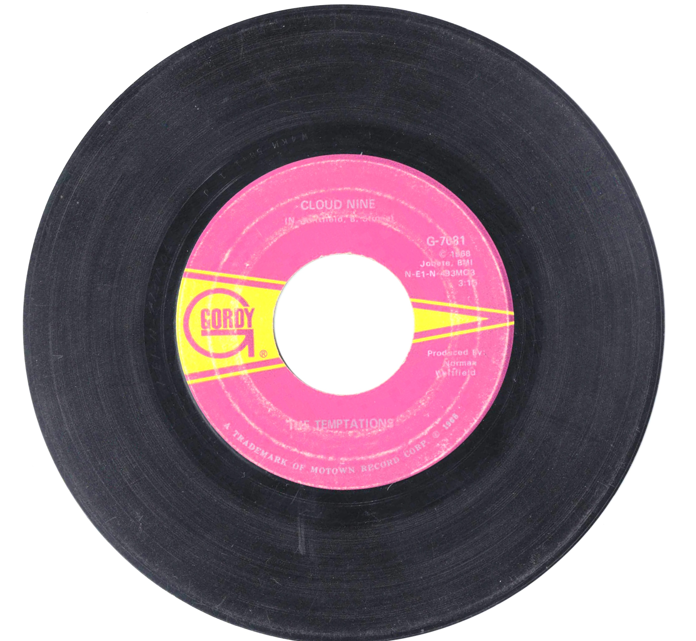

Product No. HEC-0124
$4.95
Shipping: $8.95
Description
45 RPM, 7-inch single
Full Description
The Temptations are an American vocal group that became one of Motown's most successful and influential acts. Formed in Detroit in the early 1960s, the group became famous for smooth harmonies, coordinated choreography, stylish stage performances, and a long series of hit records. The classic lineup included Otis Williams, Melvin Franklin, Eddie Kendricks, Paul Williams, and David Ruffin. Their breakthrough came with "The Way You Do the Things You Do," followed by major hits such as "My Girl," "Ain't Too Proud to Beg," "Get Ready," "I Wish It Would Rain," and "You're My Everything." In the late 1960s and early 1970s, The Temptations expanded their sound with more socially conscious and psychedelic-influenced recordings. Songs such as "Cloud Nine," "Ball of Confusion," and "Papa Was a Rollin' Stone" showed the group's ability to evolve with changing musical styles. Over the decades, The Temptations experienced numerous personnel changes, but Otis Williams remained a constant member and continued the group's legacy. Their music combined soul, pop, rhythm and blues, and later funk influences. The Temptations were inducted into the Rock and Roll Hall of Fame in 1989. With enduring songs, polished performances, and one of the most recognizable sounds in Motown history, they remain one of the most celebrated vocal groups in American popular music.
Condition
Good condition